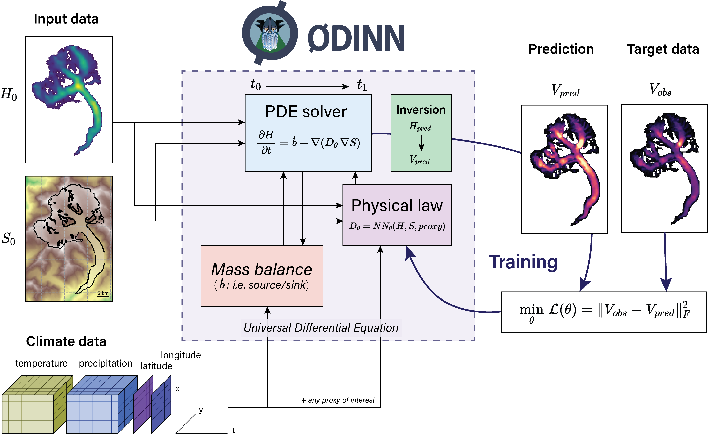

Inversion types
In this section we present the main ideas behind the inversions. In data assimilation, one aims at calibrating a model such that the predictions match the observations. The observations can be either an initial state, a final state or observations over time. The first two are called steady state inversions while the last one corresponds to a transient inversion.
In the standard setting, inversions are made with respect to some quantity of interest that is involed in the iceflow equation, i.e. the mechanistic model. This can be for example the creep coefficient $A$ for the Shallow Ice Approximation (SIA) like in [2]. This parameter can be constant for one glacier or vary with respect to space, in which case a spatial regularization is added to make the inversion problem well-posed.
Another way to invert a parameter in an iceflow equation is to parametrize the quantity of interest, let us say $A$, by other quantities which can be in the case of [2], the long term air temperature $T$. The optimized variable is not $A$ but the parameters $\theta$ and the mapping $(T,\theta)\mapsto A(\theta,T)$ defines a parametrization of the ice rheology. We refer hereafter to this kind of inversion as a functional inversion, where the goal is to optimize the parameters of a regressor specifying a function, rather than directly optimizing parameters or coefficients of a mechanistic model.
We summarize the main differences between the two kind of inversions hereafter but first let us define the loss functions used in ODINN.
Classical inversions
We refer to classical inversions as the inverse problems where the objective is to directly invert the parameters $p$ of a mechanistic model itself (e.g. the SIA equation). These type of inversions are handled in ODINN via the Inversion subtype of Simulation.
The optimization problem is $\min_p \mathcal{D}\left(\hat S, S \right) + \mathcal{R}\left( \hat S, p \right)$ where $p$ is the vector of parameters to invert, for example $p=[A]$.
This workflow is still under construction, since we're giving priority to functional inversions. We have an open issue to track this and we will update the documentation here accordingly once this feature is added.
Functional inversions
We refer to functional inversions as the inverse problems where the objective is to invert the parameter $\theta$ of a regressor (e.g. a neural network), in order to learn a function that parametrizes a subpart of a mechanistic model (e.g. the SIA) with respect to one or more input variables (e.g. surface melt, basal slope) [2]. The methods behind functional inversions are known as Universal Differential Equations [1].
We present the concept of a functional inversion for the case where we want to learn a law for the ice rheology $A$ in the Shallow Ice Approximation by using a neural network as a parametrization $A=\text{NN}(\theta,T)$ with weights $\theta$. $\begin{aligned}& \min_\theta \mathcal{D}\left(\hat S, S \right) + \mathcal{R}\left( \hat S, p \right)\\ & A=\text{NN}(\theta,T) \end{aligned}$

Figure: Overview of
ODINN.jl’s workflow to perform functional inversions of glacier physical processes using Universal Differential Equations. The parameters ($θ$) of a function determining a given physical process ($D_θ$), expressed by a neural network $NN_θ$, are optimized in order to minimize a loss function. In this example, the physical to be inferred law was constrained only by climate data, but any other proxies of interest can be used to design it. The climate data, and therefore the glacier mass balance, are downscaled (i.e. it depends on $S$), with $S$ being updated by the solver, thus dynamically updating the state of the simulation for a given timestep.
Understanding the Laws interface
In ODINN, in order to specify functional inversions, we have introduced a Law type which is responsible for linking a given regressor and a set of input variables to a target of a mechanistic model (for now the SIA). Here is a quick example on how this looks like:
law_inputs = (; CPDD=InpCPDD(), topo_roughness=InpTopoRough())
model = Huginn.Model(
iceflow = SIA2Dmodel(params; C=SyntheticC(params; inputs=law_inputs)),
mass_balance = nothing
)In this piece of code, we are selecting cumulative positive degree days (CPDDs) and topographical roughness as inputs for a law/parametrization named SyntheticC. Then, when declaring the ice flow model, we associate it to the parameter C of the iceflow model (i.e. the basal sliding). Using this simple interface, we can easily combine all sorts of input variables, with different laws and targets/subparts of mechanistic models.
It is important to bear in mind that new input types and laws cannot be created on the fly, they need to be specified/added by a user beforehand. For input variables, it is generally a matter of fetching the right data and processing it to the right format for the law/function. For laws, one just needs to specify which function is applied to the different input variables. If the law and input variables involve a regressor, then the new types for the law and inputs must be added to ODINN.jl here; if the law doesn't include any regressors, they can be added directly to Huginn.jl here.
Here is an example of how the code of an input variable looks like:
# We first need to declare the type for the input variable, with any fields that might be needed
struct InpCPDD <: AbstractInput
window::Int
end
# Then we can specify a default name for that input
default_name(::InpCPDD) = :CPDD
# And then, using multiple dispatch, we specify the righ `get_input` function for this type, i.e. how to get it
function get_input(cpdd::InpCPDD, simulation, glacier_idx, t)
window = cpdd.window
glacier = simulation.glaciers[glacier_idx]
# We trim only the time period between `t` and `t - x`, where `x` is the PDD time window defined in the physical parameters.
period = (partial_year(Day, t) - Day(window)):Day(1):partial_year(Day, t)
get_cumulative_climate!(glacier.climate, period)
# Convert climate dataset to 2D based on the glacier's DEM
climate_2D_step = downscale_2D_climate(glacier.climate.climate_step, glacier)
return climate_2D_step.PDD
endThe logic behind the Laws system is quite similar. Here is a simple example of a synthetic law made following this interface:
function SyntheticC(params::Sleipnir.Parameters; inputs = (; CPDD=InpCPDD()))
C_synth_law = Law{Array{Float64, 2}}(;
name = :SyntheticC,
inputs = inputs,
max_value = params.physical.maxC,
min_value = params.physical.minC,
f! = function (cache, inp, θ)
# Nonlinear scaling using a sigmoid transformation
# C = Cmin + (Cmax - Cmin) * sigmoid(β * (inp.CPDD)))
# β controls the steepness of the sigmoid, ϵ avoids division by zero
Cmin = params.physical.minC
Cmax = params.physical.maxC
β = 1.0 # Steepness parameter for sigmoid
sigmoid = @. 1.0 / (1.0 + exp(-β * (inp.CPDD - 1.0))) # Center sigmoid at x=1 for flexibility
# If the provided C values are a matrix, reduce matrix size to match operations
cache .= Cmin .+ (Cmax - Cmin) .* (isa(sigmoid, Matrix) ? inn1(sigmoid) : sigmoid)
end,
init_cache = function (simulation, glacier_idx, θ; scalar::Bool = false)
# Initialize cache as a scalar or vector depending on the required output
scalar ? zeros() : zeros(size(simulation.glaciers[glacier_idx].S) .- 1)
end,
callback_freq = 1/52, # weekly frequency
)
return C_synth_law
endDeclaring a Law implies creating a function which returns a specific type for that law. That custom type needs to specify (1) any necessary fields to be used (e.g. the inputs, its name...), (2) its associated function f!, i.e. what does the law do, (3) how the cache needs to be initialized for the law to interact with the simulation, and (4) the callback frequency callback_freq, which determines the time frequency on which the law will be called during the simulation (e.g. weekly).
Functional inversions in ODINN are handled by a FunctionalInversion subtype of Simulation.
Functional inversion tutorial
The functional inversion tutorial gives an example of how such an inversion can be run in practice with ODINN.jl.
Logging
ODINN.jl provides useful statistics, such as the training loss history or the parameters history in the inversion objects. The training statistics can also be inspected with TensorBoard through VSCode or a local webserver. You can either use the TensorBoard VSCode extension or simply install TensorBoard in a Python environment and then launch tensorboard --logdir .logs/.
By default the TensorBoard logs are stored in your ODINN folder in ODINN/.logs/ but you may have to adapt the command above if you log in a different folder.